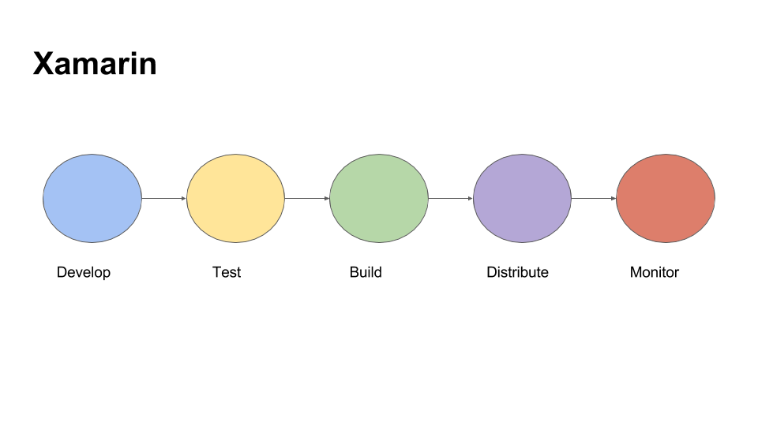
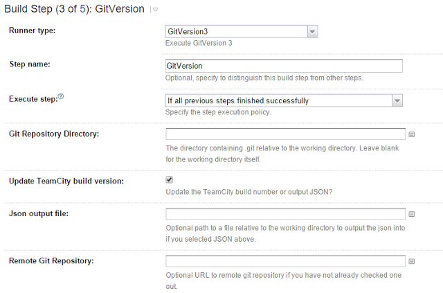
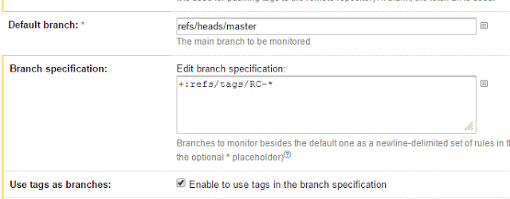
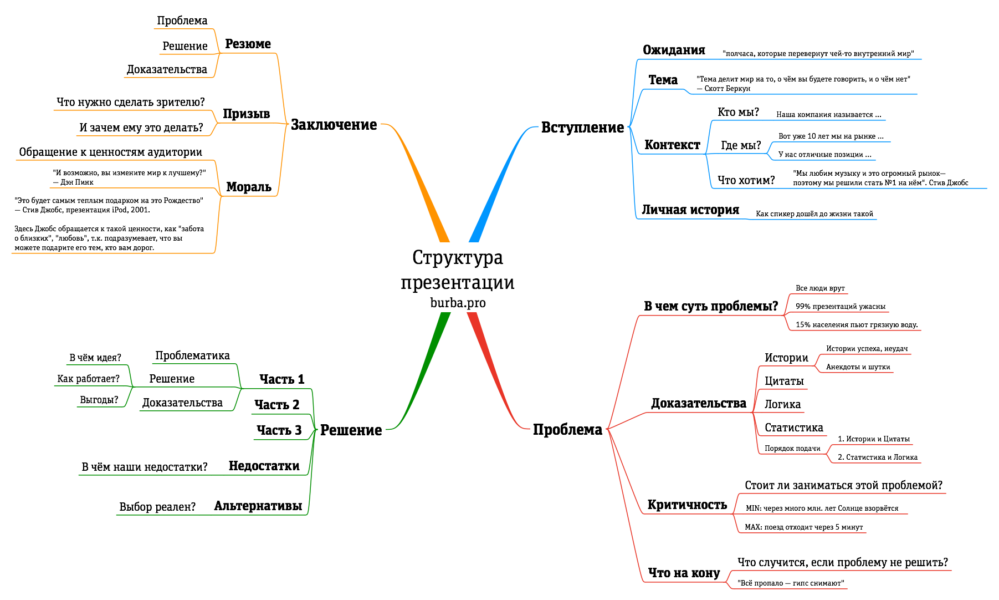

Hi All, it is my overview of Xamarin Dev Days - short summary. Hope it will be useful to create an impression what you can expect from this event.
My stream technology is server-side .NET or ASP.NET MVC. My current project is on .NET platform, the main technology is Windows Workflow Foundation and I am not using Xamarin platform. But I had a small experience in Xamarin that I got during working on my previous project.
Some time ago I had a chance to visit Xamarin Dev Days event in Warsaw. It was one day event in Warsaw Microsoft office. There were two part: the first one is generic information about Xamarin ecosystem and Azure Mobile Apps. The second one is hands on lab. So this presentation has been created to summarize and do a short recap mentioned event.

The first thing that you should keep in mind when you are talking about Xamarin is that you are able to write application not using Visual Studio on Windows only, but also Xamarin Studio on Mac. Basically, as I understand, usually people are using Visual Studio to develop Android and Phone applications and Xamarin Studio on Mac to develop IOS application. But, of course, the team is using one code base. The reason of this approach, that it is much more quicker to build IOS application on MAC directly, without remote building using Visual Studio on Windows.
The second thing is that Xamarin is not only about developing cross-platform applications using Visual Studio or Xamarin Studio, but Xamarin also provides possibility to test you application on various number of devices using Xamarin Cloud. As you can imagine, it is very expensive to buy all set of mobile devices for testing, so this cloud allows you to run your application on thousand of real devices in the cloud, analyze detailed test reports with results, screenshots, and performance metrics. Also it allows you to measure performance of your application. Sounds very cool, but there was a question from Xamarin Dev Days presenter about if there is someone who is using this cloud and nobody answered.
The third thing is about building and continuous integration. Actually it is not about Xamarin but aboutTFS(Team Foundation Server). You are able to install it on your private server or it is possible to use Visual Studio Online service from Microsoft. It is free for small teams. It provides opportunity to work with your code (git), use agile board to organize your work, set up your continuous integration project (pure version of team city), create test cases.
The last one is about distributing and monitoring. I can’t say a lot about distributing as I have never put any application to stores. As for monitoring, there is Xamarin Insight. It is the same approach as Visual Studio Application Insights. It is an extensible analytics service that helps you understand the performance and usage of your live mobile application. It's designed for developers, to help you continuously improve the performance and usability of your app. It allows:
Here I want to show the main ways to build mobile application.
Here I put the main interesting features of Xamarin:
Currently there are two ways to write shared code in Xamarin:
Another one nice feature of Xamarin is Xamarin plugins that can be downloaded using nuget. These libraries allow you to use functionality that adds cross-platform functionality or abstracts platform specific functionality to a common API, like battery, geolocation, media and so on.
You are able to find the whole list of plugins here.
Use the Xamarin.Forms API provides a way to quickly build native apps for iOS, Android and Windows completely in C#. Xamarin.Forms is included with Visual Studio.
Azure App Service is a fully managed Platform as a Service (PaaS) that brings a rich set of capabilities to web, mobile and integration scenarios.
Want to mention two nice libraries/ applications:
There are a list of references and interesting information about Xamarin. Thank you for reading. Please feel free to ask any questions, I will try to answer.
GitVersion is the utility to set up version of deployed assemblies using information from Git.
There is an easy way to set up it on your TC build server. Go to MetaRunner and download MR_GitVersion3.xml file. You should put this file to your build server. The path is C:\ProgramData\JetBrains\TeamCity\config\projects{Project}\pluginData\metaRunners. The first part of this part you can find in Global settings of Team City. Also you have to restart your server after this.
So you will be able to set up GitVersion build step which just gran information about your version from Git tags and put it to your assemblies.
TC to build only commits with tags (RC-*). VCS Root set up:
 
Trigger:
Linux Filesystem
The Filesystem Hierarchy Standard

The Boot Process

Choosing a Linux Distribution

The code:
$(function () {
$('#container').highcharts({
chart: {
type: 'column'
},
tooltip: {
formatter: function () {
var typeInf = '';
var types = this.point.Types;
$.each(types, function (index) {
typeInf += '<b>' + types[index][0] + '</b> ' + types[index][1] + '<br/>';
});
return 'The value for <b>' + this.x +
'</b> is <b>' + this.y + '</b><br/>' + typeInf;
}
},
xAxis: {
categories: ['Green', 'Pink']
},
series: [{
data: [{
name: 'Point 1',
Types: [["one", 1], ["two", 1]],
color: '#00FF00',
y: 2
}, {
name: 'Point 2',
Types: [["one", 2], ["two", 3]],
color: '#FF00FF',
y: 5
}]
}]
});
});
There is a good question about this.
Also there is a code. I have used MD5 algorithm for my purposes.
public async Task<string> GetFileChecksumAsync(string fileName)
{
HashAlgorithmProvider alg = Windows.Security.Cryptography.Core.HashAlgorithmProvider.OpenAlgorithm(HashAlgorithmNames.Md5);
IStorageFile stream = await openFile(fileName);
using (var inputStream = await stream.OpenReadAsync())
{
Windows.Storage.Streams.Buffer buffer = new Windows.Storage.Streams.Buffer(BUFFER_SIZE);
var hash = alg.CreateHash();
while (true)
{
await inputStream.ReadAsync(buffer, BUFFER_SIZE, InputStreamOptions.None);
if (buffer.Length > 0)
hash.Append(buffer);
else
break;
}
return CryptographicBuffer.EncodeToHexString(hash.GetValueAndReset()).ToUpper();
}
}
Add "Show All" to the FuelUX Tree like this.

There is the tree plugin. You can add the next code after initialization of the tree:
scope.find('#MyTree').on('selected', function (event, data) {
if (data.target.additionalParameters.id == 0) {
scope.find('#MyTree').find('.tree-item').removeClass('tree-selected').find('i').removeClass('icon-ok').addClass('tree-dot');
scope.find('#MyTree').find('.tree-item:eq(1)').addClass('tree-selected').find('i').removeClass('tree-dot').addClass('icon-ok');
scope.find('#MyTree').find('.tree-folder-header> i.icon-ok').remove();
}
else {
scope.find('#MyTree').find('.tree-item:eq(1)').removeClass('tree-selected').find('i').removeClass('icon-ok').addClass('tree-dot');
if (data.target.additionalParameters.type == 'anyOther') {
data.element.closest('.tree-folder-content').find('.tree-item:gt(0)').removeClass('tree-selected').find('i').removeClass('icon-ok').addClass('tree-dot');
}
}
});
I have created one more plugin for HTML table. It fixes the head of a table on the page. Please see it. The main feature is supporting of overflow parent element.
Some images of plugin:

And another plugin https://bitbucket.org/upyl/fixedcolumn to fix column of table.

I have created the light version of MonoDroid Unit Testing framework.
Please look and use if you need.
If you use bootstrap and recaptcha, you may face a problem like wrong padding|margin:
You should add next css style to yours:
body{ line-height:1}
And all will be OK ! Enjoy!
I have updated bootstrap datepicker to new view mode: week.
The source code is here
There is interesting bug connected with Html.Hidden. There are two model:
public class Model1{
public int ID{get;set;}
public Model2 Model2Model{get;set;}
}
public class Model2{
public int ID{get;set;}
}
Page:
<html>
...
<body>
@Html.Partial("partial"
<body>
</html>
It is possible to create script of MSSQL using SMO: (link)
private static void Main(string[] args)
{
var arguments = args.Select(x => x.ToLower()).ToList();
if (arguments.Count == 0 || arguments.Contains("-help"))
{
Console.WriteLine("-d - Database Name");
Console.WriteLine("-i - Output Sql File Name");
Console.WriteLine("-s - Server Instance");
Console.WriteLine("-u - User Name");
Console.WriteLine("-p - Password");
Console.WriteLine("It should be 'tables.txt' file in folder with names of tables to script; if it does not exist the application scripts all tables with prefix 'GMP_'");
Console.ReadKey();
}
else if (arguments.Count > 1 && arguments.Contains("-d") && args.Contains("-i"))
{
if (arguments.Count <= arguments.IndexOf("-d") + 1)
{
throw new ArgumentException("Database Name");
}
if (arguments.Count <= argumSMO Scripter. Create script of DBents.IndexOf("-i") + 1)
{
throw new ArgumentException("Output Sql File Name");
}
var dbName = arguments[arguments.IndexOf("-d") + 1];
var outputFileName = arguments[arguments.IndexOf("-i") + 1];
var srv = new Server();
if (arguments.Contains("-s") && args.Contains("-u") && arguments.Contains("-p"))
{
if (arguments.Count <= arguments.IndexOf("-s") + 1)
{
throw new ArgumentException("Server Instance");
}
if (arguments.Count <= arguments.IndexOf("-u") + 1)
{
throw new ArgumentException("User Name");
}
if (arguments.Count <= arguments.IndexOf("-p") + 1)
{
throw new ArgumentException("Password");
}
var connection = new ServerConnection(arguments[arguments.IndexOf("-s") + 1], arguments[arguments.IndexOf("-u") + 1], arguments[arguments.IndexOf("-p") + 1]);
srv = new Server(connection);
}
// read names of tables
var tablesFromFile = new List<string>();
if (File.Exists("tables.txt"))
{
using (var file = File.OpenText("tables.txt"))
{
while (file.Peek() > 0)
{
tablesFromFile.Add(file.ReadLine());
}
}
}
Database db = srv.Databases[dbName];
var dropKeys = new Scripter(srv) {Options = {ScriptDrops = true, IncludeIfNotExists = true, DriForeignKeys = true}};
var listOfScripts = new List<Scripter>
{
new Scripter(srv) {Options = {ScriptDrops = true, IncludeIfNotExists =true, DriAllKeys = false}},
new Scripter(srv) {Options = {ScriptDrops = false, ScriptSchema = true, WithDependencies = false, DriIndexes = true, DriClustered = true, IncludeIfNotExists = true, DriAllKeys = false}},
new Scripter(srv) {Options = {ScriptDrops = false, ScriptSchema = true, DriDefaults = false, DriIndexes = false, DriPrimaryKey = false, DriClustered = false, Default = false, DriAll =false, DriForeignKeys = true, IncludeIfNotExists = true, DriAllKeys = false}},
new Scripter(srv) {Options = {DriIndexes = true, Default = true, DriDefaults = true, DriClustered = false, IncludeIfNotExists = true, DriAll = true, DriAllConstraints = true, DriAllKeys = true, SchemaQualify = true, SchemaQualifyForeignKeysReferences = true, NoCollation = true}}
};
using (var file = File.CreateText(outputFileName))
{
foreach (Table tb in db.Tables)
{
if ((tablesFromFile.Count > 0 && tablesFromFile.Contains(tb.Name) || (tablesFromFile.Count== 0 && tb.Name.StartsWith("GMP_"))))
{
if (tb.IsSystemObject == false)
{
foreach (ForeignKey foreignKey in tb.ForeignKeys)
{
System.Collections.Specialized.StringCollection scd = dropKeys.Script(new[] {foreignKey.Urn });
foreach (string st in scd)
{
file.WriteLine(st);
file.WriteLine("GO");
}
}
file.WriteLine();
}
}
}
foreach (var script in listOfScripts)
{
foreach (Table tb in db.Tables)
{
if ((tablesFromFile.Count > 0 && tablesFromFile.Contains(tb.Name) ||(tablesFromFile.Count == 0 && tb.Name.StartsWith("GMP_"))))
{
if (tb.IsSystemObject == false)
{
System.Collections.Specialized.StringCollection scd = script.Script(new[] {tb.Urn });
foreach (string st in scd)
{
file.WriteLine(st);
file.WriteLine("GO");
}
file.WriteLine();
}
}
}
}
}
}
}
It is not easy command to unbind solution/project of TFS.
But there is manual actions to do that:

I am starting to work with persistence.js library and open the problem to me: it saves empty data to web sql

After investigating the problem i have found this question and just want to clear and reproduce it in my notes. Thanks guys from this question :) The problem connected with this js file: persistence.jquery. If it used, we should rewrite code such as:

Thanks.
After reading a lot of articles about this theme, I start to use the next extensions
public static class Linq
{
public static IEnumerable<T> Except<T>(this IEnumerable<T> source, IEnumerable<T> target, Func<T, T, bool> func)
{
return source.Except(target, new LambdaComparer<T>(func));
}
public static TResult With<TInput, TResult>(this TInput o, Func<TInput, TResult> evaluator)
where TInput : class
{
if (o == null) return default(TResult);
return evaluator(o);
}
public static TResult Return<TInput, TResult>(this TInput o, Func<TInput, TResult> evaluator, TResult failure_value) where TInput : class
{
if (o == null) return failure_value;
return evaluator(o);
}
public static bool Check<TInput>(this TInput o, Func<TInput, bool> evaluator) where TInput : class
{
if (o == null) return false;
return evaluator(o);
}
public static TInput If<TInput>(this TInput o, Func<TInput, bool> evaluator) where TInput : class
{
if (o == null) return null;
return evaluator(o) ? o : null;
}
public static TInput Unless<TInput>(this TInput o, Func<TInput, bool> evaluator) where TInput : class
{
if (o == null) return null;
return evaluator(o) ? null : o;
}
public static TInput Do<TInput>(this TInput o, Action<TInput> action) where TInput : class
{
if (o == null) return null;
action(o);
return o;
}
public static List<TInput> Delete<TInput>(this List<TInput> o, Func<TInput, bool> evaluator) where TInput : class
{
var listToDelete = o.Where(evaluator).ToList();
foreach (var input in listToDelete)
{
o.Remove(input);
}
return o;
}
}
public class LambdaComparer<T> : IEqualityComparer<T>
{
private readonly Func<T, T, bool> _lambdaComparer;
private readonly Func<T, int> _lambdaHash;
public LambdaComparer(Func<T, T, bool> lambdaComparer) :
this(lambdaComparer, o => 0)
{
}
public LambdaComparer(Func<T, T, bool> lambdaComparer, Func<T, int> lambdaHash)
{
if (lambdaComparer == null)
throw new ArgumentNullException("lambdaComparer");
if (lambdaHash == null)
throw new ArgumentNullException("lambdaHash");
_lambdaComparer = lambdaComparer;
_lambdaHash = lambdaHash;
}
public bool Equals(T x, T y)
{
return _lambdaComparer(x, y);
}
public int GetHashCode(T obj)
{
return _lambdaHash(obj);
}
}
Log2Console with IISExpress and log4net I have found that log4net and log2console don't work correctly (using IISExpress) with each other after trying using default configuration from http://log2console.codeplex.com/wikipage?title=ClientConfiguration.
But i have found new configuration for log4net and log2console (log4net) and

Seems work fine:

JQuery / Twitter Bootstrap List Tree Plugin is a great plugin, but it does not allow to edit and sort tree elements. I have created an editable version of plugin: The view of tree:

You can find the source code there or here.
Also see it below.
It is not so easy to find the steps to delete project from TFS.
So, according to http://stackoverflow.com/questions/13635889/delete-team-project-from-free-team-foundation-service.
You can use the following command from the "Developer Command Prompt":
TfsDeleteProject /collection:https://mytfs.visualstudio.com/DefaultCollection MyProject
Thank you
I m using ASP.NET MVC. And work with my view, where I have the View

It gives me the exception
The call is ambiguous between the following methods or properties: 'GMP.MvcWebSite.StringExtensions.TrimOrEmpty(string)' and 'System.StringHelper.TrimOrEmpty(string)'
So i just rebuild my view as